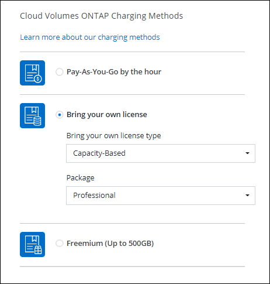

リリースノート
リリースノート
新機能
 変更を提案
変更を提案
BlueXPのCloud Volumes ONTAP Managementの新機能をご紹介します。
このページで説明Cloud Volumes ONTAP する機能拡張は'BlueXPの機能に固有のものであり'BlueXPの管理を可能にしますCloud Volumes ONTAP ソフトウェア自体の新機能については、 "Cloud Volumes ONTAP のリリースノートに移動します"
2023年9月10日
コネクタの3.9.33リリースでは、次の変更が導入されました。
AzureでのLsv3シリーズVMのサポート
AzureのCloud Volumes ONTAPでは、9.13.1リリース以降で、単一のアベイラビリティゾーンと複数のアベイラビリティゾーンに管理対象ディスクを共有するシングルノード環境とハイアベイラビリティペア環境で、L48s_v3とL64s_v3のインスタンスタイプがサポートされるようになりました。これらのインスタンスタイプでは、Flash Cacheがサポートされます。
2023年7月30日
コネクタの3.9.32リリースでは、次の変更が導入されました。
Google CloudでFlash Cacheと高速書き込み速度をサポート
Google Cloud for Cloud Volumes ONTAP 9.13.1以降では、Flash Cacheと高速書き込み速度を個別に有効にすることができます。高速の書き込み速度は、サポートされているすべてのインスタンスタイプで使用できます。Flash Cacheは、次のインスタンスタイプでサポートされています。
-
N2-STANDARD-16
-
N2-STANDARD-32
-
N2-STANDARD-48
-
N2-STANDARD-64
これらの機能は、シングルノード環境とハイアベイラビリティペア環境の両方で個別に使用することも、一緒に使用することもできます。
使用状況レポートの機能拡張
使用状況レポートに表示される情報に対するさまざまな改善が利用可能になりました。使用状況レポートの機能拡張は次のとおりです。
-
TiB単位が列名に追加されました。
-
シリアル番号の新しい「ノード」フィールドが追加されました。
-
[Storage VMs]使用状況レポートに新しい[Workload Type]列が追加されました。
-
作業環境の名前がStorage VMとボリュームの使用状況レポートに表示されるようになりました。
-
ボリュームタイプ「file」のラベルが「Primary（Read/Write）」に変更されました。
-
ボリュームタイプ「secondary」のラベルが「Secondary（DP）」に変更されました。
使用状況レポートの詳細については、を参照してください。 "使用状況レポートをダウンロードします"。
2023年7月26日
コネクタの3.9.31リリースでは、次の変更が導入されました。
Cloud Volumes ONTAP 9.13.1 GA
BlueXPで、AWS、Azure、Google CloudにCloud Volumes ONTAP 9.13.1 General Availabilityリリースを導入、管理できるようになりました。
2023年7月2日
コネクタの3.9.31リリースでは、次の変更が導入されました。
AzureでのHAマルチアベイラビリティゾーン環境のサポート
Azureの東日本および韓国中部では、Cloud Volumes ONTAP 9.12.1 GA以降でHAマルチアベイラビリティゾーンの導入がサポートされるようになりました。
複数のアベイラビリティゾーンをサポートするすべてのリージョンのリストについては、を参照してください "Azureのグローバルリージョンマップ"。
自律型ランサムウェア対策のサポート
Cloud Volumes ONTAPでAutonomous Ransomware Protection（ARP）がサポートされるようになりました。ARPサポートは、Cloud Volumes ONTAPバージョン9.12.1以降で使用できます。
Cloud Volumes ONTAPを使用したARPの詳細については、を参照してください "自律的なランサムウェア防御"。
2023年6月26日
コネクタの3.9.30リリースでは、次の変更が加えられました。
Cloud Volumes ONTAP 9.13.1 RC1
BlueXPで、AWS、Azure、Google CloudにCloud Volumes ONTAP 9.13.1を導入、管理できるようになりました。
2023年6月4日
コネクタの3.9.30リリースでは、次の変更が加えられました。
Cloud Volumes ONTAPアップグレードバージョンセレクタの更新
Upgrade Cloud Volumes ONTAPページで、Cloud Volumes ONTAPの最新バージョンまたは古いバージョンへのアップグレードを選択できるようになりました。
BlueXPを使用したCloud Volumes ONTAPのアップグレードの詳細については、を参照してください "Cloud Volumes ONTAP をアップグレードします"。
2023年5月7日
コネクタの3.9.29リリースでは、次の変更が加えられました。
カタール地域がGoogle Cloudでサポートされるようになりました
カタール地域は、Google Cloud for Cloud Volumes ONTAP およびConnector for Cloud Volumes ONTAP 9.12.1 GA以降でサポートされるようになりました。
Sweden CentralリージョンがAzureでサポートされるようになりました
Sweden Centralリージョンは、Azure for Cloud Volumes ONTAP およびConnector for Cloud Volumes ONTAP 9.12.1 GA以降でサポートされるようになりました。
Azure Australia EastでのHA複数アベイラビリティゾーンの導入のサポート
Azureのオーストラリア東部リージョンでは、Cloud Volumes ONTAP 9.12.1 GA以降でHAマルチアベイラビリティゾーンの導入がサポートされるようになりました。
充電使用量の内訳
容量ベースのライセンスにサブスクライブしたときに課金される料金を確認できるようになりました。次のタイプの使用状況レポートは、BlueXPのデジタルウォレットからダウンロードできます。使用状況レポートには、サブスクリプションの容量の詳細と、Cloud Volumes ONTAP サブスクリプションのリソースに対する課金状況が表示されます。ダウンロード可能なレポートは、他のユーザーと簡単に共有できます。
-
Cloud Volumes ONTAP パッケージの使用状況
-
使用状況の概要
-
Storage VMの使用状況
-
ボリュームの使用状況
詳細については、を参照してください "容量ベースのライセンスを管理します"。
MarketplaceのサブスクリプションなしでBlueXPにアクセスすると通知が表示されるようになりました
Marketplaceのサブスクリプションを購入せずにBlueXPでCloud Volumes ONTAP にアクセスすると、必ず通知が表示されるようになりました。通知には、「この作業環境のマーケットプレイスサブスクリプションは、Cloud Volumes ONTAP の利用規約に準拠する必要があります」と記載されています。
2023年4月4日
Cloud Volumes ONTAP 9.12.1 GA以降では、次のように中国リージョンがAWSでサポートされるようになりました。
-
シングルノードシステムがサポートされます。
-
ネットアップから直接購入したライセンスはサポートされます。
地域ごとの可用性については、を参照してください "Cloud Volumes ONTAP のグローバルリージョンマップ"。
2023年4月3日
コネクタの3.9.28リリースでは、次の変更が導入されました。
TurinリージョンがGoogle Cloudでサポートされるようになりました
Turinリージョンは、Google Cloud for Cloud Volumes ONTAP およびConnector for Cloud Volumes ONTAP 9.12.1 GA以降でサポートされるようになりました。
BlueXPのデジタルウォレット機能の強化
BlueXPのデジタルウォレットに、Marketplaceのプライベートオファーで購入したライセンス容量が表示されるようになりました。
ボリューム作成時のコメントがサポートされます
このリリースでは、APIを使用してCloud Volumes ONTAP FlexGroup ボリュームまたはFlexVol ボリュームを作成する際にコメントを作成することができます。
Cloud Volumes ONTAP の[Overview]、[Volumes]、[Aggregates]ページでBlueXPのユーザインターフェイスが再設計されました
Cloud Volumes ONTAP の[概要]、[ボリューム]、[アグリゲート]ページで使用できるユーザインターフェイスが再設計されました。タイルベースのデザインでは、より包括的な情報が各タイルに表示され、ユーザーエクスペリエンスが向上します。

FlexGroup ボリュームはCloud Volumes ONTAP で確認できます
CLIまたはSystem Managerで作成したFlexGroup ボリュームは、BlueXPの再設計された[ボリューム]タイルで直接表示できるようになりました。FlexVol ボリュームの場合と同じように、作成したFlexGroup ボリュームの詳細情報は専用の[Volumes]タイルで確認できます。

|
現時点では、BlueXPでは既存のFlexGroup ボリュームのみを表示できます。BlueXPでFlexGroup ボリュームを作成することはできませんが、今後のリリースでサポートする予定です。 |
 タイルの下にFlexGroup ボリュームアイコンが配置されたテキストを示すスクリーンショット。"]
タイルの下にFlexGroup ボリュームアイコンが配置されたテキストを示すスクリーンショット。"]
2023年3月13日
中国地域のサポート
Cloud Volumes ONTAP 9.12.1 GA以降では、次のように中国リージョンのサポートがAzureでサポートされるようになりました。
-
Cloud Volumes ONTAP は中国北部3でサポートされています。
-
シングルノードシステムがサポートされます。
-
ネットアップから直接購入したライセンスはサポートされます。
地域ごとの可用性については、を参照してください "Cloud Volumes ONTAP のグローバルリージョンマップ"。
2023年3月5日
コネクタの3.9.27リリースでは、次の変更が加えられました。
Cloud Volumes ONTAP 9.13.0
BlueXPで、AWS、Azure、Google CloudにCloud Volumes ONTAP 9.13.0を導入、管理できるようになりました。
Azureで16TiBと32TiBをサポート
Cloud Volumes ONTAP では、Azureのマネージドディスクで実行される高可用性環境向けに、16TiBと32TiBのディスクサイズがサポートされるようになりました。
の詳細を確認してください "Azureでサポートされるディスクサイズ"。
MTEKMライセンス
バージョン9.12.1 GA以降を実行する新規および既存のCloud Volumes ONTAP システムに、マルチテナント暗号化キー管理（MTEKM）ライセンスが含まれるようになりました。
マルチテナントの外部キー管理を使用すると、NetApp Volume Encryptionの使用時に、個々のStorage VM（SVM）でKMIPサーバを介して独自のキーを保持できます。
インターネットを使用しない環境のサポート
インターネットから完全に分離されたすべてのクラウド環境でCloud Volumes ONTAP がサポートされるようになりました。これらの環境では、ノードベースのライセンス（BYOL）のみがサポートされます。容量単位のライセンスはサポートされていません。開始するには、コネクタソフトウェアを手動でインストールし、コネクタで実行されているBlueXPコンソールにログインし、BlueXPデジタルウォレットにBYOLライセンスを追加してから、Cloud Volumes ONTAP を導入します。
Google CloudでのFlash Cacheと高速書き込み
Cloud Volumes ONTAP 9.13.0リリースでは、Flash Cache、高速な書き込み速度、最大転送単位（MTU）8、896バイトがサポートされるようになりました。
の詳細を確認してください "Google Cloudのライセンスごとにサポートされる構成"。
2023年2月5日
コネクタの3.9.26リリースでは、次の変更が導入されました。
AWSでの配置グループの作成
AWS HA単一アベイラビリティゾーン（AZ）環境で配置グループを作成するための新しい設定が追加されました。失敗した配置グループの作成をバイパスして、AWS HA単一のAZ環境を正常に完了できるようにすることができます。
配置グループの作成設定の詳細については、を参照してください "AWS HA単一AZ用の配置グループの作成を設定する"。
プライベートDNSゾーン設定の更新
Azureプライベートリンクの使用時にプライベートDNSゾーンと仮想ネットワークの間にリンクを作成しないように、新しい設定が追加されました。作成はデフォルトで有効になっています。
WORMストレージとデータ階層化
Cloud Volumes ONTAP 9.8以降のシステムを作成するときに、データ階層化とWORMストレージの両方を有効にできるようになりました。WORMストレージによるデータ階層化を有効にすると、データをクラウドのオブジェクトストアに階層化できます。
2023年1月1日
コネクタの3.9.25リリースでは、次の変更が導入されました。
Google Cloudで提供されているライセンスパッケージ
最適化さCloud Volumes ONTAP れた容量ベースのライセンスパッケージとエッジキャッシュ容量ベースのライセンスパッケージは、Google Cloud Marketplaceで従量課金制サービスまたは年間契約として提供されます。
を参照してください "Cloud Volumes ONTAP ライセンス"。
Cloud Volumes ONTAP のデフォルト設定
マルチテナント暗号化キー管理（MTEKM）ライセンスは新しいCloud Volumes ONTAP 環境には含まれなくなりました。
Cloud Volumes ONTAP とともに自動的にインストールされるONTAP 機能ライセンスの詳細については、を参照してください "Cloud Volumes ONTAP のデフォルト設定"。
2022年12月15日
Cloud Volumes ONTAP 9.12.0
BlueXPでは、AWSとGoogle CloudにCloud Volumes ONTAP 9.12.0を導入して管理できるようになりました。
2022年12月8日
Cloud Volumes ONTAP 9.12.1
BlueXPでは、Cloud Volumes ONTAP 9.12.1を導入および管理できるようになりました。新機能やその他のクラウドプロバイダリージョンのサポートが含まれます。
2022年12月4日
コネクタの3.9.24リリースでは、次の変更が導入されました。
Cloud Volumes ONTAP の作成中に、Worm+ Cloud Backupを利用できるようになりました
Cloud Volumes ONTAP の作成プロセスで、Write Once、Read Many（WORM）、およびCloud Backupの両方の機能をアクティブ化できるようになりました。
イスラエルでGoogle Cloudがサポートされるようになりました
イスラエルのリージョンは、Google Cloud for Cloud Volumes ONTAP とConnector for Cloud Volumes ONTAP 9.11.1 P3以降でサポートされるようになりました。
2022年11月15日
コネクタの3.9.23リリースでは、次の変更が導入されました。
Google CloudのONTAP S3ライセンス
ONTAP Cloud Platformでバージョン9.12.1以降を実行する新規および既存のCloud Volumes ONTAP システムに、S3ライセンスが含まれるようになりました。
2022年11月6日
コネクタの3.9.23リリースでは、次の変更が導入されました。
Azureでリソースグループを移動しています
同じAzureサブスクリプション内で、Azure内の1つのリソースグループから別のリソースグループに作業環境を移動できるようになりました。
詳細については、を参照してください "リソースグループを移動しています"。
Azureのマネージドディスク暗号化機能をサポート
作成時にすべての管理対象ディスクを暗号化できる、新しいAzure権限が追加されました。
この新機能の詳細については、を参照してください "Azure でお客様が管理するキーを使用するように Cloud Volumes ONTAP を設定します"。
2022年9月18日
コネクタの3.9.22リリースでは、次の変更が導入されました。
デジタルウォレットの機能強化
-
デジタルウォレットに、最適化されたI/Oライセンスパッケージと、アカウント全体でCloud Volumes ONTAP システム用にプロビジョニングされたWORM容量の概要が表示されます。
これらの詳細情報は、充電状況や容量の追加購入が必要かどうかを把握するのに役立ちます。
-
1つの充電方法から最適化された充電方法に変更できるようになりました。
コストとパフォーマンスを最適化
Cloud Volumes ONTAP システムのコストとパフォーマンスをキャンバスから直接最適化できるようになりました。
作業環境を選択したら、コストとパフォーマンスの最適化*オプションを選択して、Cloud Volumes ONTAP のインスタンスタイプを変更できます。サイズの小さいインスタンスを選択するとコストを削減できますが、サイズの大きいインスタンスに変更することでパフォーマンスを最適化できます。
 オプションのスクリーンショット。"]
オプションのスクリーンショット。"]
AutoSupport 通知
Cloud Volumes ONTAP システムがAutoSupport メッセージを送信できない場合、BlueXPは通知を生成するようになりました。この通知には、ネットワークの問題のトラブルシューティングに使用できる手順へのリンクが記載されています。
2022年7月31日
コネクタの3.9.21リリースでは、次の変更が導入されました。
MTEKMライセンス
バージョン9.11.1以降を実行している新規および既存のCloud Volumes ONTAP システムに、Multi-tenant Encryption Key Management（MTEKM）ライセンスが追加されました。
マルチテナントの外部キー管理を使用すると、NetApp Volume Encryptionの使用時に、個々のStorage VM（SVM）でKMIPサーバを介して独自のキーを保持できます。
プロキシサーバ
Cloud Volumes ONTAP AutoSupport メッセージの送信にアウトバウンドのインターネット接続を使用できない場合、BlueXPでは、コネクタをプロキシサーバとして使用するようにシステムが自動的に設定されるようになりました。
AutoSupport は、システムの健常性をプロアクティブに監視し、ネットアップテクニカルサポートにメッセージを送信します。
唯一の要件は、コネクタのセキュリティグループがポート3128で_ inbound_connectionsを許可することです。コネクタを展開した後、このポートを開く必要があります。
充電方法を変更します
容量ベースのライセンスを使用するCloud Volumes ONTAP システムの充電方法を変更できるようになりました。たとえば、Essentialsパッケージを含むCloud Volumes ONTAP システムを導入した場合、ビジネスニーズの変化に応じて、そのシステムをProfessionalパッケージに変更できます。この機能は、デジタルウォレットから使用できます。
セキュリティグループの機能拡張
Cloud Volumes ONTAP 作業環境を作成するときに、ユーザインターフェイスを使用して、事前定義されたセキュリティグループで選択したネットワークのみ（推奨）またはすべてのネットワーク内のトラフィックを許可するかどうかを選択できるようになりました。

2022年7月18日
Azureの新しいライセンスパッケージです
Azure Marketplaceサブスクリプションでのお支払い時に、Cloud Volumes ONTAP 用に2つの容量ベースのライセンスパッケージが新たに提供されます。
-
最適化：プロビジョニングされた容量とI/O処理に別々に課金します
-
* Edge Cache*:のライセンス "Cloud Volume エッジキャッシュ"
2022年7月3日
コネクタの3.9.20リリースでは、次の変更が導入されました。
デジタルウォレット
デジタルウォレットに、アカウントで消費された合計容量とライセンスパッケージで消費された容量が表示されるようになりました。この情報は、料金の支払い方法や、容量の追加購入が必要かどうかを把握するのに役立ちます。

Elastic Volumesの機能拡張
BlueXPでは、ユーザーインターフェイスからCloud Volumes ONTAP 作業環境を作成する際に、Amazon EBS Elastic Volumes機能がサポートされるようになりました。Elastic Volumes機能は、GP3またはio1ディスクを使用している場合、デフォルトで有効になっています。初期容量はストレージのニーズに基づいて選択し、Cloud Volumes ONTAP の導入後に変更することができます。
AWSのONTAP S3ライセンス
AWSでバージョン9.11.0以降を実行している新規および既存のCloud Volumes ONTAP システムにONTAP S3ライセンスが追加されました。
Azure Cloudリージョンが新たにサポートされます
9.10.1リリース以降、Azure West US 3リージョンでCloud Volumes ONTAP がサポートされるようになりました。
AzureのONTAP S3ライセンス
バージョン9.9.1以降を実行する新規および既存のCloud Volumes ONTAP システムにONTAP S3ライセンスが追加されました。
2022年6月7日
コネクタの3.9.19リリースでは、次の変更が導入されました。
Cloud Volumes ONTAP 9.11.1
BlueXPでは、Cloud Volumes ONTAP 9.11.1の導入と管理ができるようになりました。これには、新機能のサポートとその他のクラウドプロバイダリージョンの追加が含まれています。
新しい詳細ビュー
Cloud Volumes ONTAP の高度な管理を行う必要がある場合は、ONTAP システムに付属の管理インターフェイスであるONTAP System Managerを使用します。BlueXPにはSystem Managerインターフェイスが搭載されているので、高度な管理のためにBlueXPを残す必要はありません。
この拡張ビューは、Cloud Volumes ONTAP 9.10.0以降でプレビューとして使用できます。今後のリリースでは、この点をさらに改良し、機能を強化する予定です。製品内のチャットでご意見をお寄せください。
Amazon EBS Elastic Volumesのサポート
Cloud Volumes ONTAP アグリゲートでAmazon EBS Elastic Volumes機能がサポートされるため、パフォーマンスが向上し、容量が追加されます。また、必要に応じて基盤となるディスク容量が自動的に拡張されます。
Elastic Volumeは、Cloud Volumes ONTAP 9.11.0システム以降、GP3およびio1 EBSディスクタイプでサポートされます。
Elastic Volumesをサポートするために、Connectorに対する新しいAWS権限が必要になることに注意してください。
"ec2:DescribeVolumesModifications",
"ec2:ModifyVolume",BlueXPに追加したAWSクレデンシャルの各セットに、これらの権限を必ず付与してください。 "AWSの最新のコネクタポリシーを確認します"。
共有AWSサブネットでのHAペアの導入をサポートします
Cloud Volumes ONTAP 9.11.1では、AWS VPC共有がサポートされています。このリリースのコネクタでは、APIを使用するときにAWS共有サブネットにHAペアを導入できます。
サービスエンドポイントを使用する場合は、ネットワークアクセスが制限されます
Cloud Volumes ONTAP とストレージアカウント間の接続にVNetサービスエンドポイントを使用する場合に、ネットワークアクセスが制限されるようになりました。Azure Private Link接続を無効にすると、BlueXPはサービスエンドポイントを使用します。
Google CloudでのStorage VMの作成がサポートされます
Google CloudのCloud Volumes ONTAP では、9.11.1リリース以降、複数のStorage VMがサポートされています。このリリースのコネクタから、BlueXPでは、Cloud Volumes ONTAP を使用してGoogle CloudのHAペアにStorage VMを作成できるようになりました。
Storage VMの作成をサポートするには、次のコネクタに対する新しいGoogle Cloud権限が必要です。
- compute.instanceGroups.get
- compute.addresses.getONTAP CLIまたはSystem Managerを使用して、シングルノードシステムにStorage VMを作成する必要があります。
2022年5月2日
コネクタの3.9.18リリースでは、次の変更が加えられました。
Cloud Volumes ONTAP 9.11.0
BlueXPでCloud Volumes ONTAP 9.11.0の導入と管理が可能になりました
メディエーターのアップグレードに関する機能拡張
BlueXPがHAペアのメディエーターをアップグレードすると、新しいメディエーターイメージがブートディスクを削除する前に使用可能であることが検証されるようになりました。この変更により、アップグレードプロセスが失敗した場合でもメディエーターは正常に動作し続けることができます。
K8sタブが削除されました
K8sタブは以前のでは廃止されており、現在は削除されています。KubernetesとCloud Volumes ONTAP を併用する場合は、高度なデータ管理のための作業環境として、管理対象- Kubernetesクラスタをキャンバスに追加できます。
Azureの年間契約
EssentialsパッケージとProfessionalパッケージは、年間契約を通じてAzureで利用できるようになりました。年間契約を購入するには、ネットアップの営業担当者にお問い合わせください。この契約は、Azure Marketplaceでのプライベートオファーとして提供されます。
ネットアップがお客様とプライベートオファーを共有したあとは、Azure Marketplaceでの作業環境の作成時にサブスクリプションするときに、年間プランを選択できます。
S3 Glacierのインスタント検索
Amazon S3 Glacier Instant Retrievalストレージクラスに階層化データを格納できるようになりました。
コネクタに新しいAWS権限が必要です
単一のAvailability Zone（AZ；アベイラビリティゾーン）にHAペアを導入する際にAWS分散配置グループを作成するためには、次の権限が必要です。
"ec2:DescribePlacementGroups",
"iam:GetRolePolicy",これらの権限は、BlueXPによる配置グループの作成方法を最適化するために必要になりました。
BlueXPに追加したAWSクレデンシャルの各セットに、これらの権限を必ず付与してください。 "AWSの最新のコネクタポリシーを確認します"。
新しいGoogle Cloudリージョンサポート
9.10.1リリース以降、Cloud Volumes ONTAP は次のGoogle Cloudリージョンでサポートされるようになりました。
-
デリー（アジア-サウス2）
-
メルボルン（オーストラリア-スモアカス2）
-
Milan（Europe - west8）-シングルノードのみ
-
Santiago（southamerica-west1）-シングルノードのみ
Google Cloudでのn2標準16のサポート
Google CloudのCloud Volumes ONTAP では、9.10.1リリース以降のn2標準-16マシンタイプがサポートされます。
Google Cloudファイアウォールポリシーの機能強化
-
Google CloudでCloud Volumes ONTAP HAペアを作成すると、VPC内の既存のすべてのファイアウォールポリシーがBlueXPに表示されるようになりました。
以前は、ターゲットタグがないVPC -1、VPC -2、またはVPC -3のポリシーは表示されませんでした。
-
Google CloudでCloud Volumes ONTAP シングルノードシステムを作成する際に、定義済みのファイアウォールポリシーで、選択したVPC内のトラフィックのみを許可するか（推奨）、すべてのVPC内のトラフィックを許可するかを選択できるようになりました。
Google Cloudサービスアカウントの機能強化
Cloud Volumes ONTAP で使用するGoogle Cloudサービスアカウントを選択すると、各サービスアカウントに関連付けられているメールアドレスがBlueXPに表示されるようになりました。メールアドレスを表示すると、同じ名前を共有するサービスアカウントを区別しやすくなります。

2022年4月3日
System Manager のリンクが削除されました
Cloud Volumes ONTAP 作業環境内から以前に利用可能だった System Manager のリンクを削除しました。
Cloud Volumes ONTAP システムに接続している Web ブラウザにクラスタ管理 IP アドレスを入力しても、 System Manager に接続できます。 "System Manager への接続に関する詳細情報"。
WORM ストレージの充電
導入時の特別料金が期限切れになり、 WORM ストレージの使用料が請求されます。WORM ボリュームのプロビジョニング済みの合計容量に基づいて、 1 時間ごとに課金されます。この環境 の新規および既存の Cloud Volumes ONTAP システムです。
(2022年2月27日).
コネクタの3.9.16リリースでは、次の変更が加えられました。
ボリュームウィザードの再設計
特定のアグリゲートに * Advanced allocation * オプションからボリュームを作成するときに、新しいボリューム作成ウィザードを使用できるようになりました。
2022年2月9日
市場の最新情報
-
EssentialsパッケージとProfessionalパッケージは、すべてのクラウドプロバイダマーケットプレイスで利用できるようになりました。
容量単位の課金方法では、時間単位での支払いや、年間契約の購入をクラウドプロバイダから直接行うことができます。容量単位のライセンスは、ネットアップから直接購入することもできます。
クラウドマーケットプレイスで既存のサブスクリプションがある場合は、それらの新しいサービスにも自動的にサブスクライブされます。新しい Cloud Volumes ONTAP 作業環境の導入時に、容量単位の課金を選択できます。
新規のお客様の場合は、新しい作業環境を作成するときに登録を求めるメッセージが表示されます。
-
すべてのクラウドプロバイダマーケットプレイスからのノード単位のライセンスが廃止され、新しいユーザには提供されなくなりました。これには、年間契約と時間単位のサブスクリプション（ Explore 、 Standard 、 Premium ）が含まれます。
この充電方法は、有効なサブスクリプションをお持ちの既存のお客様には引き続きご利用いただけます。
2022年2月6日
未割り当ての Exchange ライセンス
Cloud Volumes ONTAP 用の未割り当てのノードベースライセンスがあり、使用していない場合は、そのライセンスを Cloud Backup ライセンス、 Cloud Data Sense ライセンス、 Cloud Tiering ライセンスに変換してライセンスを交換できるようになりました。
この操作により、 Cloud Volumes ONTAP ライセンスが取り消され、同じ有効期限のサービスに対してドル相当のライセンスが作成されます。
(2022年1月30日).
コネクタの3.9.15リリースでは、次の変更が加えられました。
ライセンスの選択を再設計
新しい Cloud Volumes ONTAP 作業環境を作成する際に、ライセンス選択画面を再設計しました。この変更は、 2021 年 7 月に導入された容量別課金方法と、クラウドプロバイダマーケットプレイスを通じて提供される予定のサービスを反映しています。
デジタルウォレットの更新
Cloud Volumes ONTAP ライセンスを 1 つのタブに統合し、 * デジタルウォレット * を更新しました。
2022年1月2日
コネクタの3.9.14リリースでは、次の変更が導入されました。
追加のAzure VMタイプがサポートされます
Cloud Volumes ONTAP は、 9.10.1 リリース以降、 Microsoft Azure で次の VM タイプでサポートされるようになりました。
-
e4ds_v4
-
E8ds_v4
-
E32ds_v4
-
E48ds_v4
にアクセスします "Cloud Volumes ONTAP リリースノート" サポートされる構成の詳細については、を参照してください。
FlexClone による課金の更新
を使用する場合 "容量単位のライセンスです" Cloud Volumes ONTAP については、 FlexClone ボリュームで使用される容量の追加料金は発生しません。
充電方法が表示されます
Cloud Volumes ONTAP の各作業環境の充電方法がキャンバスの右側のパネルに表示されるようになりました。

ユーザ名を選択します
Cloud Volumes ONTAP 作業環境を作成する際に、デフォルトの admin ユーザ名ではなく、優先ユーザ名を入力できるようになりました。

ボリューム作成の機能拡張
ボリューム作成機能がいくつか強化されました。
-
使いやすいようにボリューム作成ウィザードの設計が変更されました。
-
ボリュームに追加するタグがアプリケーションテンプレートサービスに関連付けられ、リソースの管理を整理して簡単にすることができます。
-
これで、 NFS 用のカスタムエクスポートポリシーを選択できるようになりました。

(2021年11月28日).
コネクタの3.9.13リリースでは、次の変更が導入されました。
Cloud Volumes ONTAP 9.10.1
BlueXPでCloud Volumes ONTAP 9.10.1の導入と管理が可能になりました。
NetApp Keystone サブスクリプション
Keystoneサブスクリプションを使用して、Cloud Volumes ONTAP HAペアの料金を支払うことができるようになりました。
Keystoneサブスクリプションは、CAPEX（設備投資）やリースよりもOPEX（運用コスト）消費モデルを希望するお客様に、シームレスなハイブリッドクラウドエクスペリエンスを提供する、従量課金制のサブスクリプションベースのサービスです。
Keystoneサブスクリプションは、BlueXPから導入できるすべての新しいバージョンのCloud Volumes ONTAP でサポートされます。
AWS リージョンが新たにサポートされるようになり
Cloud Volumes ONTAP は、 AWS アジア太平洋（大阪）リージョン（ AP-F北東 -3 ）でサポートされるようになりました。
ポート削減
Azure の Cloud Volumes ONTAP システムでは、シングルノードシステムと HA ペアの両方に対してポート 8023 と 49000 が開かれなくなりました。
これにより、 Cloud Volumes ONTAP の _new_環境 システムが、 3.9.13 リリース以降のコネクタから変更されます。
2021年10月4日
コネクタの3.9.11リリースでは、次の変更が導入されました。
Cloud Volumes ONTAP 9.10.0
BlueXPはCloud Volumes ONTAP 9.10.0を導入して管理できるようになりました
導入時間を短縮
通常の書き込み速度が有効な場合、 Microsoft Azure または Google Cloud で Cloud Volumes ONTAP 作業環境を導入するための時間を短縮しました。導入時間が平均して 3~4 分短縮されます。
2021年9月2日
コネクタの3.9.10リリースでは、次の変更が導入されました。
Azure のお客様が管理する暗号化キー
データは、を使用して Azure の Cloud Volumes ONTAP で自動的に暗号化されます "Azure Storage Service Encryption の略" Microsoft が管理するキーを使用する場合：ただし、次の手順を実行する代わりに、お客様が管理する独自の暗号化キーを使用できるようになりました。
-
Azure で、キーヴォールトを作成し、そのヴォールトでキーを生成します。
-
BlueXPから'APIを使用して'キーを使用するCloud Volumes ONTAP 作業環境を作成します
2021 年 7 月 7 日
3.9.8リリースのコネクタには、次の変更が加えられています。
新しい充電方法
Cloud Volumes ONTAP では、新しい充電方法を利用できます。
-
* 容量ベースの BYOL * ：容量ベースのライセンスでは、 TiB あたりの Cloud Volumes ONTAP 料金を支払うことができます。このライセンスはネットアップアカウントに関連付けられており、ライセンスで十分な容量が確保されていれば、複数の Cloud Volumes ONTAP システムを作成できるようになっています。容量ベースのライセンスは、 Essentials_or_Professional のいずれかのパッケージ形式で提供されます。
-
* Freemium offering * ： Freemium により、ネットアップのすべての Cloud Volumes ONTAP 機能を無償で使用できます（クラウドプロバイダの料金は引き続き適用されます）。システムあたりのプロビジョニング可能な容量は 500 GiB に制限されており、サポート契約はありません。最大 10 個の Freemium システムを使用できます。
以下に、充電方法の例を示します。

一般的に使用できる WORM ストレージ
Write Once 、 Read Many （ WORM ）ストレージはプレビューではなくなり、 Cloud Volumes ONTAP で一般的に使用できるようになりました。 "WORM ストレージの詳細については、こちらをご覧ください。"。
AWS で m5dn.24xlarge をサポートしています
9.9.1 リリース以降、 Cloud Volumes ONTAP では m5dn.24xlarge インスタンスタイプがサポートされるようになりました。課金方式は PAYGO Premium 、 Bring Your Own License （ BYOL ；お客様所有のライセンスを使用）、 Freemium です。
既存の Azure リソースグループを選択します
Azure で Cloud Volumes ONTAP システムを作成する際に、 VM とその関連リソースに対して既存のリソースグループを選択できるようになりました。

次の権限を使用すると、展開に失敗したり削除したりした場合に、Cloud Volumes ONTAP リソースをリソースグループから削除できます。
"Microsoft.Network/privateEndpoints/delete",
"Microsoft.Compute/availabilitySets/delete",BlueXPに追加したAzureクレデンシャルの各セットに、これらの権限を必ず付与してください。 "Azureの最新のコネクタポリシーを表示します"。
Blob パブリックアクセスが Azure で無効になりました
セキュリティの強化として、Cloud Volumes ONTAP 用のストレージアカウントを作成する際に、BlueXPは*Blobパブリックアクセス*を無効にするようになりました。
Azure Private Link の機能強化
BlueXPでは、新しいCloud Volumes ONTAP システムのブート診断ストレージアカウントでAzure Private Link接続がデフォルトで有効になっています。
つまり、 Cloud Volumes ONTAP の _all_storage アカウントでプライベートリンクが使用されるようになります。
Google Cloud 内の分散型の永続的ディスク
9.9.1 リリース以降、 Cloud Volumes ONTAP では Balanced Persistent Disk （ pd-bBalanced ）がサポートされるようになりました。
この SSD は、 GiB あたりの IOPS を下げて、パフォーマンスとコストのバランスを取ります。
Custom-4-16384 は Google Cloud でサポートされなくなりました
新しい Cloud Volumes ONTAP システムでは、 custom-4-16384 マシンタイプはサポートされなくなりました。
このタイプのマシンで既存のシステムを実行している場合は、引き続き使用できますが、 n2 標準 -4 マシンタイプに切り替えることをお勧めします。
2021年5月30日
コネクタの3.9.7リリースでは、次の変更が導入されました。
AWS での新しいプロフェッショナルパッケージ
新しいプロフェッショナルパッケージでは、 AWS Marketplace で毎年契約を締結し、 Cloud Volumes ONTAP と Cloud Backup Service をバンドルできます。支払いは TiB あたりです。このサブスクリプションでは、オンプレミスのデータをバックアップすることはできません。
この支払いオプションを選択すると、 EBS ディスクを介して Cloud Volumes ONTAP システムあたり最大 2PiB をプロビジョニングし、 S3 オブジェクトストレージ（シングルノードまたは HA ）に階層化することができます。
にアクセスします "AWS Marketplace のページ" 価格の詳細を表示するには、を参照してください "Cloud Volumes ONTAP リリースノート" このライセンスオプションの詳細については、を参照してください。
AWS の EBS ボリュームでタグを使用します
新しいCloud Volumes ONTAP 作業環境を作成すると、EBSボリュームにタグが追加されます。タグは、 Cloud Volumes ONTAP の導入後に作成されたものです。
この変更は、サービス制御ポリシー（ SCP ）を使用して権限を管理する場合に役立ちます。
auto 階層化ポリシーの最小クーリング期間
auto 階層化ポリシーを使用してボリュームのデータ階層化を有効にした場合、 API を使用して最小クーリング期間を調整できるようになりました。
カスタムエクスポートポリシーの機能拡張
新しいNFSボリュームを作成すると、カスタムのエクスポートポリシーが昇順に表示されるようになり、必要なエクスポートポリシーを簡単に見つけることができます。
古いクラウド Snapshot の削除
BlueXPは、Cloud Volumes ONTAP システムの導入時に作成されたルートディスクと起動ディスクの古いクラウドスナップショットを、電源がオフになるたびに削除するようになりました。ルートボリュームとブートボリュームの両方に対して最新の 2 つの Snapshot のみが保持されます。
この機能拡張により、不要になった Snapshot を削除することでクラウドプロバイダのコストを削減できます。
Azure スナップショットを削除するには、 Connector で新しい権限が必要になることに注意してください。 "Azureの最新のコネクタポリシーを表示します"。
"Microsoft.Compute/snapshots/delete"2021年5月24日
Cloud Volumes ONTAP 9.9.1
BlueXPでCloud Volumes ONTAP 9.9.1の導入と管理が可能になりました。
2021年4月11日
コネクタの3.9.5リリースでは、次の変更が導入されました。
論理スペースのレポート
BlueXPでは、Cloud Volumes ONTAP 用に作成された最初のStorage VMで論理スペースのレポートが可能になりました。
スペースが論理的に報告されると、 ONTAP は、 Storage Efficiency 機能で削減されたすべての物理スペースが使用済みと報告するようにボリュームスペースを報告します。
AWS で GP3 ディスクがサポートされます
Cloud Volumes ONTAP では、 9.7 リリース以降、 _General Purpose SSD （ GP3 ） _disks がサポートされるようになりました。GP3 ディスクは、幅広いワークロードのコストとパフォーマンスのバランスが取れた、最も低コストの SSD です。
コールド HDD ディスクは AWS ではサポートされなくなりました
Cloud Volumes ONTAP はコールド HDD （ sc1 ）ディスクをサポートしなくなりました。
TLS 1.2 を使用して Azure ストレージアカウントを作成します
BlueXPがAzure for Cloud Volumes ONTAP でストレージアカウントを作成すると、ストレージアカウントのTLSバージョンがバージョン1.2になります。
2021年3月8日
コネクタの3.9.4リリースでは、次の変更が導入されました。
Cloud Volumes ONTAP 9.9.
BlueXPでは、Cloud Volumes ONTAP 9.9.2.0を展開および管理できるようになりました。
AWS C2S 環境をサポートします
クラウドサービス 9.8 を AWS Commercial Cloud Volumes ONTAP （ C2S ）環境に導入できるようになりました。
AWS 暗号化でユーザが管理する CMK を使用
BlueXPでは、AWS Key Management Service（KMS）を使用してCloud Volumes ONTAP データを暗号化できるようになりました。Cloud Volumes ONTAP 9.9.9..0 以降では、お客様が管理する CMK を選択すると、 EBS ディスク上のデータと S3 に階層化されたデータが暗号化されます。これまでは、 EBS データだけが暗号化されていました。
Cloud Volumes ONTAP IAM ロールに CMK を使用するためのアクセス権を付与する必要があります。
Azure DoD のサポート
Cloud Volumes ONTAP 9.8 を、国防総省（ DoD ）の影響レベル 6 （ IL6 ）に導入できるようになりました。
Google Cloud での IP アドレスの削減
Google Cloud で Cloud Volumes ONTAP 9.8 以降に必要な IP アドレスの数が削減されました。デフォルトでは、 IP アドレスを 1 つ減らす必要があります（インタークラスタ LIF をノード管理 LIF と統合しました）。また、 API を使用する場合は SVM 管理 LIF の作成を省略でき、追加の IP アドレスが不要になります。
Google Cloud での共有 VPC サポート
Google Cloud で Cloud Volumes ONTAP HA ペアを導入する際に、 VPC -1 、 VPC -2 、および VPC -3 の共有 VPC を選択できるようになりました。以前は、 VPC を共有できるのは VPC のみでした。この変更は Cloud Volumes ONTAP 9.8 以降でサポートされています。
2021年1月4日
コネクタの3.9.2リリースでは、次の変更が加えられています。
AWS がアウトポスト
数カ月前に、 Cloud Volumes ONTAP が Amazon Web Services （ AWS ）の提供開始を宣言したことを発表しました。本日は、AWSのアウトポストでBlueXPとCloud Volumes ONTAP を検証しました。
AWS Outpost を使用している場合は、 Working Environment ウィザードで Outpost VPC を選択して、その Outpost に Cloud Volumes ONTAP を導入できます。エクスペリエンスは、 AWS に存在する他の VPC と同じです。最初に、 AWS Outpost にコネクタを導入する必要があります。
指摘すべき制限事項はいくつかあります。
-
でサポートされるのはシングルノードの Cloud Volumes ONTAP システムのみです 今回は
-
Cloud Volumes で使用できる EC2 インスタンス ONTAP は、 Outpost で利用できる機能に限定されています
-
現時点では、汎用 SSD （ gp2 ）のみがサポートされます
サポートされている Azure リージョンで Ultra SSD VNVRAM を使用します
Cloud Volumes ONTAP では、 Ultra SSD をとして使用できるようになりました VNVRAM （ E32s_v3 VM タイプをで使用する場合） シングルノードシステム "サポートされる任意の Azure リージョン"。
VNVRAM により、書き込みパフォーマンスが向上します。
Azure でアベイラビリティゾーンを選択してください
これで、シングルノードの Cloud Volumes ONTAP システムを導入するアベイラビリティゾーンを選択できます。AZを選択しない場合は、BlueXPによってそのAZが選択されます。

Google Cloud の大容量ディスク
Cloud Volumes ONTAP は GCP で 64 TB のディスクをサポートするようになりました。
|
|
GCP の制限により、ディスクのみの場合の最大システム容量は 256 TB のままです。 |
Google Cloud の新しいマシンタイプ
Cloud Volumes ONTAP では、次のマシンタイプがサポートされるようになりました
-
N2 - 標準 -4 （ Explore ライセンスを含む、 BYOL を含む）
-
標準ライセンスを使用し、 BYOL を使用した N2-standard-8
-
N2 - Standard - 32 （ Premium ライセンスを使用、 BYOL を使用）
2020年11月3日
コネクタの3.9.0リリースでは、次の変更が導入されました。
Azure Private Link for Cloud Volumes ONTAP の略
デフォルトでは、BlueXPはCloud Volumes ONTAP とそれに関連付けられたストレージアカウント間のAzure Private Link接続を有効にします。プライベートリンクは、 Azure のエンドポイント間の接続を保護します。